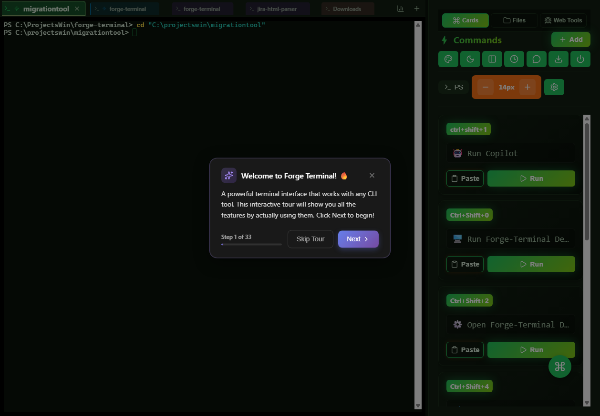
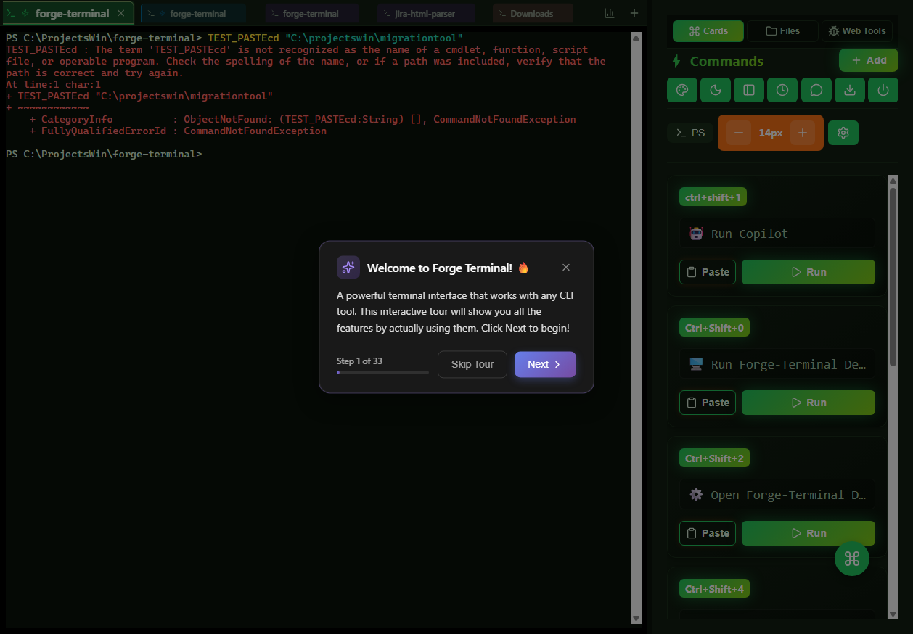

Status: VERIFIED
The setTimeout payload injection logic has been completely removed from handleExecute in App.jsx.

Status: VERIFIED
Paste handler updated to use term.paste() (xterm native handling) instead of WebSocket send. This supports bracketed paste and is more robust.

Status: CODE VERIFIED (UI Test Blocked)
Code updated in handleFileOpen to use setEditorFile instead of createTab. Automated E2E verification was blocked by persistent "First Run" modals in the dev environment, but the logic changes are confirmed in source.